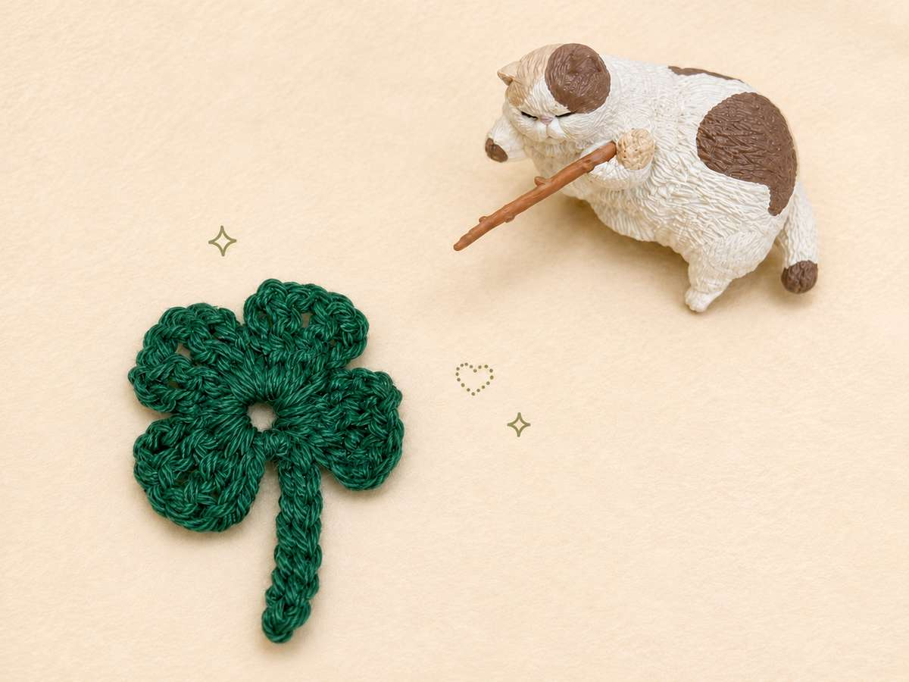
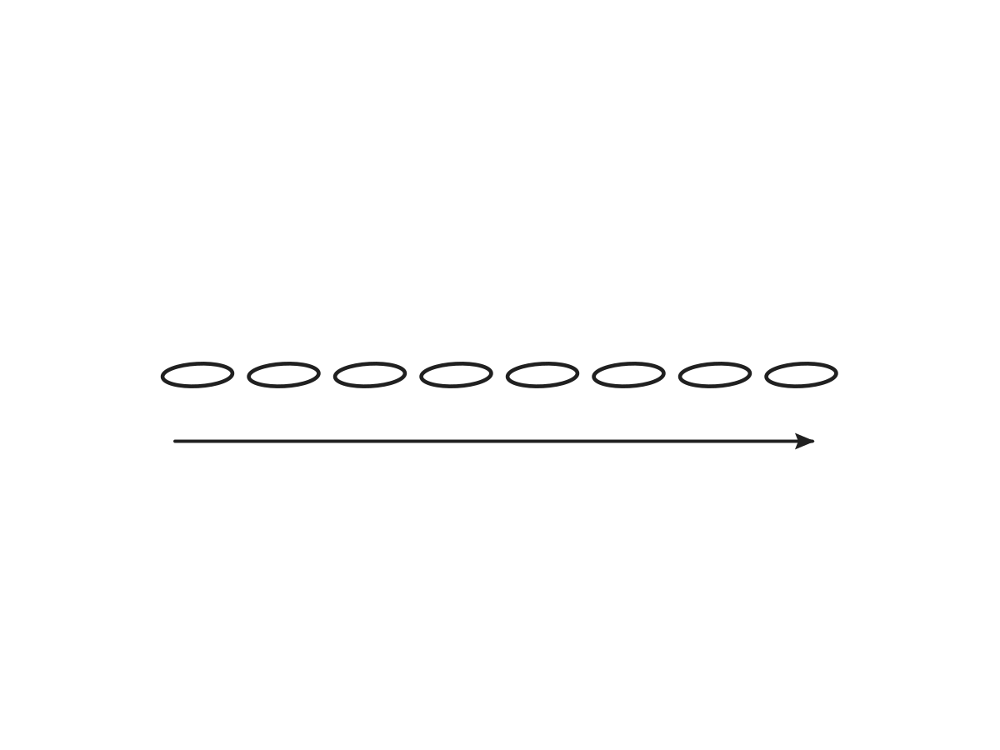
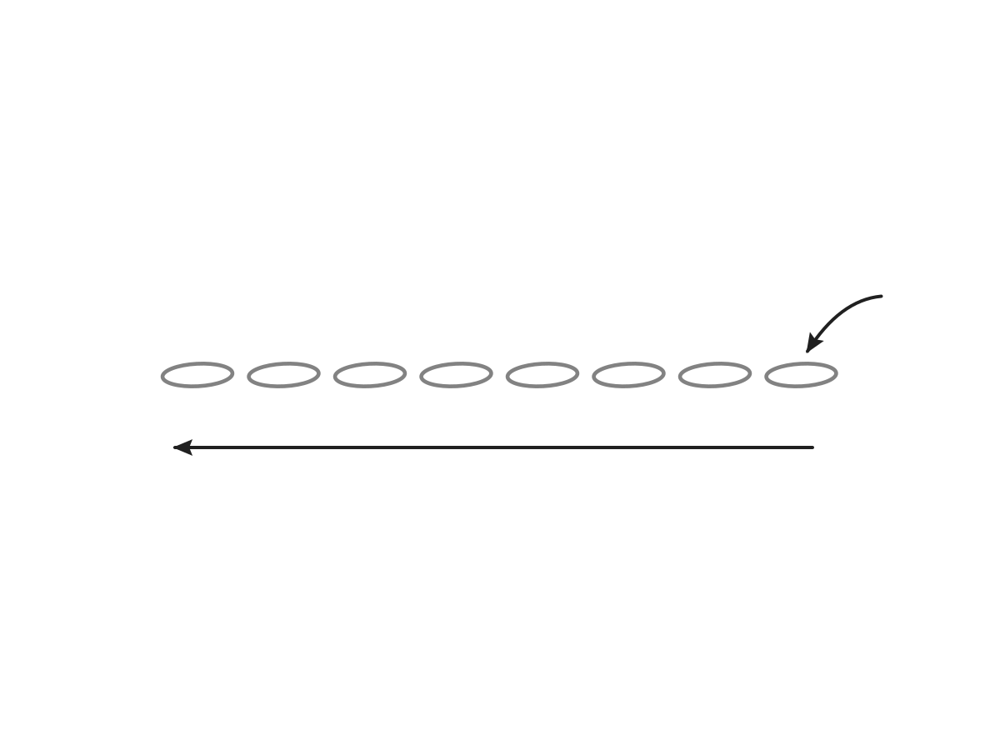
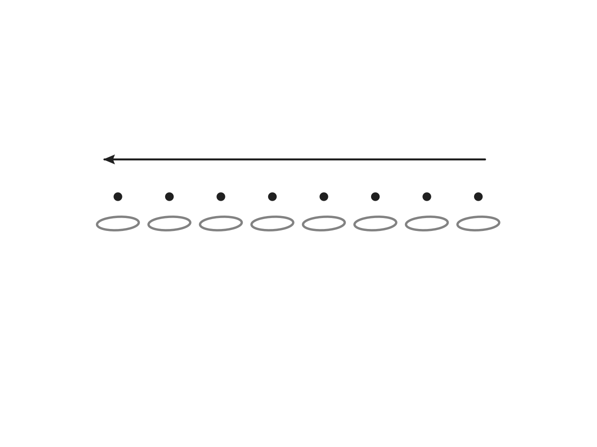
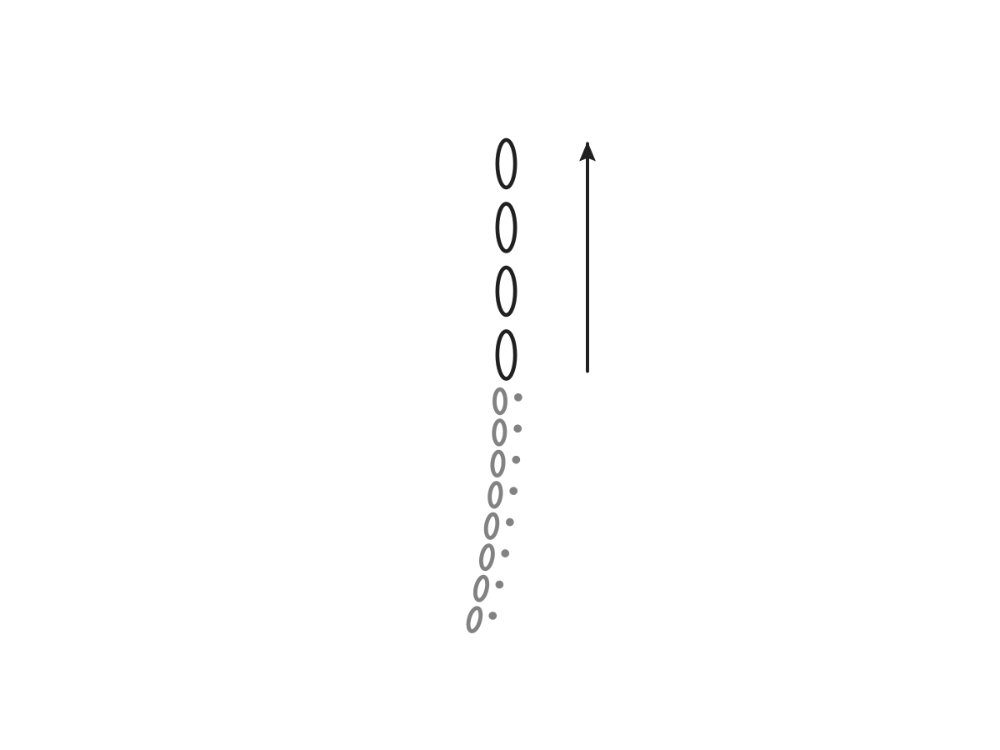

시작 고리 걸기

3mm 코바늘 · 면사 · 가위 · 돗바늘
슬립 매듭을 만들어 바늘에 걸어요. 꼬리는 약 10cm 남겨요.
고리는 바늘 몸통에서 부드럽게 움직일 정도로 조여요.


3mm 코바늘 · 면사 · 가위 · 돗바늘
슬립 매듭을 만들어 바늘에 걸어요. 꼬리는 약 10cm 남겨요.
고리는 바늘 몸통에서 부드럽게 움직일 정도로 조여요.

실을 걸어 바늘 위 고리로 빼내는 동작을 반복해 사슬 8코를 떠요. 이 사슬이 줄기 길이가 돼요.
시작 매듭과 바늘 위 고리는 코 수에 포함하지 않아요.

실을 떠서 바늘 끝의 오목한 홈에 걸어요. 바늘에 걸린 기존 고리는 그대로 두어요.

걸어 둔 실을 바늘 위 고리 하나에 통과시켜요.

새 고리 하나를 바늘에 남기고 같은 동작을 반복해요.


사슬을 뒤집고, 바늘 가까운 첫 사슬의 볼록한 산에 바늘을 넣어요. 실을 걸어 산 아래와 바늘 위 고리를 한 번에 통과시켜요.
한 코를 마치면 바늘에 고리 하나가 남아요.

사슬을 뒤집어 뒤편의 볼록한 산 하나 아래로 바늘을 넣어요.

갈고리 홈에 걸린 회색 실을 산 아래와 바늘 몸통의 고리에 한 번에 통과시켜요.

빼뜨기를 마치면 바늘에 고리 하나가 남아요.


다음 사슬로 옮겨 빼뜨기를 반복해요. 총 8코를 떠서 시작 매듭 쪽으로 돌아오면 두 겹의 줄기가 완성돼요.
줄기가 말리지 않도록 빼뜨기를 너무 조이지 않아요.


줄기 끝에서 사슬 4코를 더 떠요. 다음 단계에서 이 4코를 연결해 가운데 원을 만들어요.
줄기 바로 위의 첫 사슬을 기억해 두어요.

방금 뜬 사슬 4코를 둥글게 모아, 줄기 바로 위의 첫 사슬에 빼뜨기해요.

사슬이 꼬이지 않게 모으고, ①로 표시한 첫 사슬에 바늘을 넣어요.

걸어 둔 실을 첫 사슬과 바늘 위 고리에 한 번에 통과시켜요.

가운데 구멍과 바늘 위 고리 1개가 남아요. 이 자리에서 다음 사슬 4코를 떠요.

방금 원을 닫은 자리에서 사슬 4코를 떠요. 첫 번째 잎의 한쪽 가장자리예요.
사슬과 원이 만나는 부분을 잡고 일정한 크기로 떠요.


원 가운데에 두길긴뜨기 1코 → 사슬 1코 → 같은 원에 두길긴뜨기 1코 → 사슬 4코 → 원에 빼뜨기 순서로 떠요.
두길긴뜨기는 실을 두 번 감아 시작해요. 내려오는 사슬 4코 뒤에 가운데 원으로 빼뜨기해요.
클로버에서는 아래 편물의 코 대신 가운데 원의 구멍에 바늘을 넣어요.
두길긴뜨기 그림 출처: 박형아는 뜨개쟁이 · 2길 긴뜨기 (두길긴뜨기)

기존 고리 하나가 있는 바늘에 실을 두 번 감아요. 클로버에서는 가운데 원의 구멍에 바늘을 넣어요.

원에서 실을 끌어내면 고리 4개가 돼요. 다시 실을 걸어 앞의 고리 2개로 빼내면 3개가 남아요.

실을 다시 걸어 앞의 2개를 통과시키면 2개가 남아요.

실을 한 번 더 걸어 마지막 2개를 통과시켜요.

바늘에 고리 하나가 남고 편물에 긴 기둥 하나가 생겨요.


사슬 4코부터 잎을 완성하는 순서를 세 번 더 반복해요. 도안의 잎 1→2→3→4 순서로 같은 가운데 원에 떠요.
마지막 잎도 내려오는 사슬 4코 뒤에 가운데 원의 구멍으로 빼뜨기해 마쳐요.